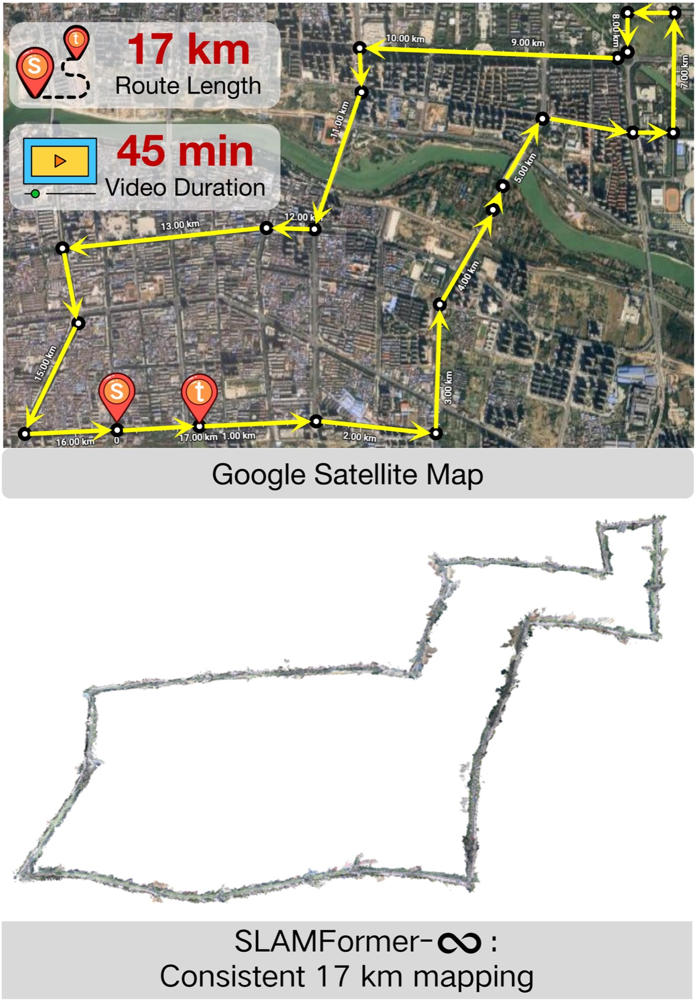
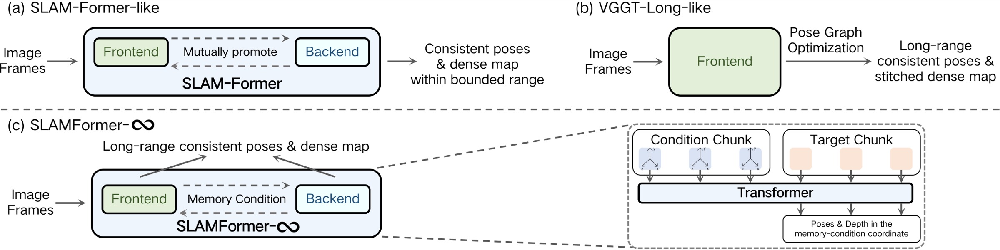
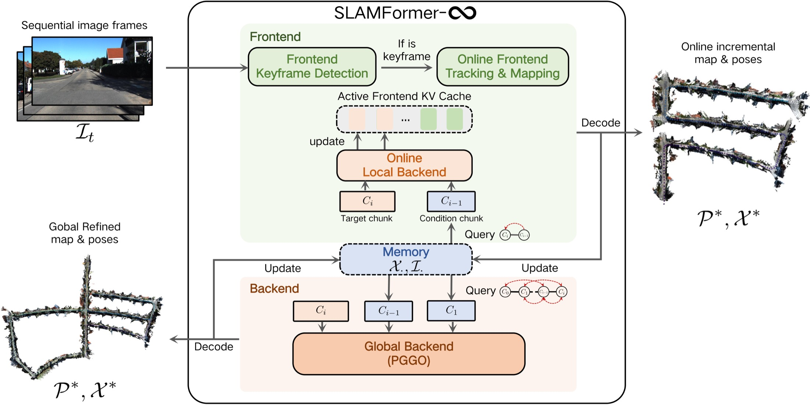
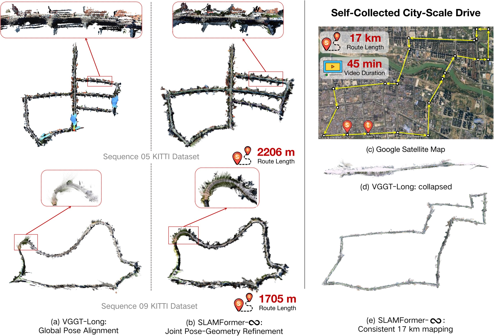
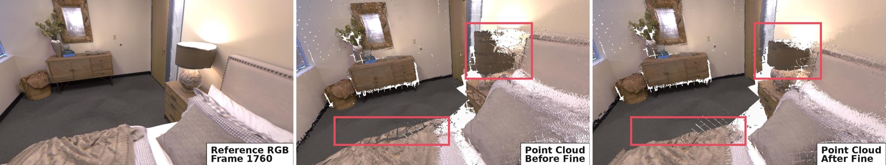

A
Strong joint reasoning, bounded by training trajectories.
First-frame-anchored global prediction ties coordinate behavior and attention state to the sequence lengths seen during training.

Memory conditions keep active predictions in a local coordinate system.
PGGO jointly refines long-range camera poses and dense scene geometry.
SLAMFormer-∞ processes streaming monocular RGB, maintains an online dense map, and revisits distant regions through a globally connected pose-geometry graph.
Each clip shows the online SLAM system building poses and dense geometry on a different KITTI drive.
Existing geometric transformers face a structural choice: learn a globally consistent pose and map inside a bounded range, or extend to long sequences by aligning poses and stitching mostly fixed local geometry. SLAMFormer-∞ removes that trade-off.
First-frame-anchored global prediction ties coordinate behavior and attention state to the sequence lengths seen during training.
Long-range alignment can recover a coarse trajectory while local pointmaps remain fragmented or misaligned.
Memory-conditioned inference preserves efficient local processing while PGGO jointly optimizes pose and dense geometry over long-range graph connections.

Frontend, local backend, and global backend share the same geometric prior. Their difference is the conditioning neighborhood and when refinement is triggered.
Streaming
Detect keyframes and incrementally estimate poses and pointmaps from bounded local context.
Periodic
Refine the latest fixed-size window and update the memory used by subsequent frontend inference.
Loop / sequence end
Iteratively update camera poses and dense pointmaps together across the global graph.

The central result is geometric: global alignment should not stop at the camera path. SLAMFormer-∞ updates the pointmaps with the poses, yielding more coherent local structures along kilometer-scale routes.

Select a KITTI sequence, then orbit, zoom, and pan each point cloud independently: VGGT-Long on the left and SLAMFormer-∞ on the right.
We foreground the behavior the method was designed for. The numbers below summarize the corresponding tracking gains without reproducing full benchmark tables.
KITTI full sequences
Waymo urban segments
7-Scenes
On Replica, the fine stage reduces local drift and cleans fragmented surfaces. This qualitative difference is more informative than the modest aggregate score change.

@misc{slamformerinfinity,
title={SLAMFormer-$\infty$: Infinite SLAM Transformer for Unbounded Frontend and Backend Processing},
author={Zhijian Fang and Weicheng Zheng and Yijun Yuan and Weibang Wang and Zhuoguang Chen and Chang Sun and Junhao Huang and Kenan Li and Minghui Qin and Hang Zhao},
year={2026},
eprint={2608.03429}
}